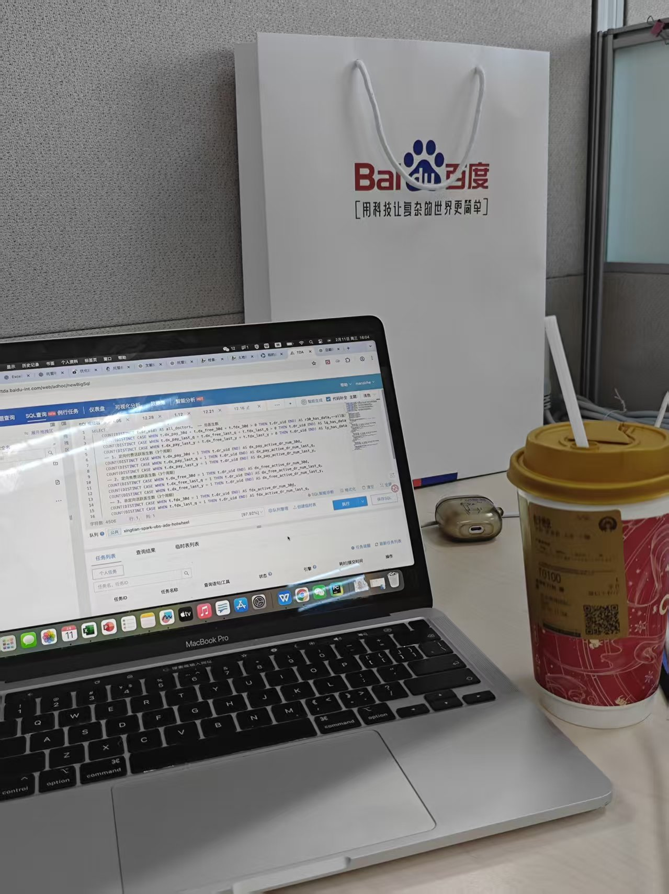
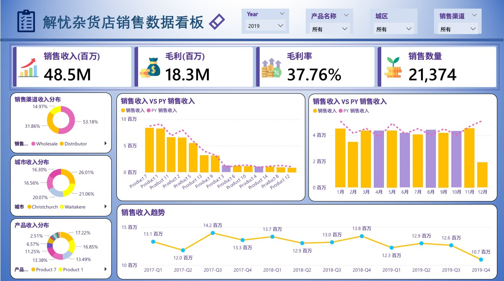
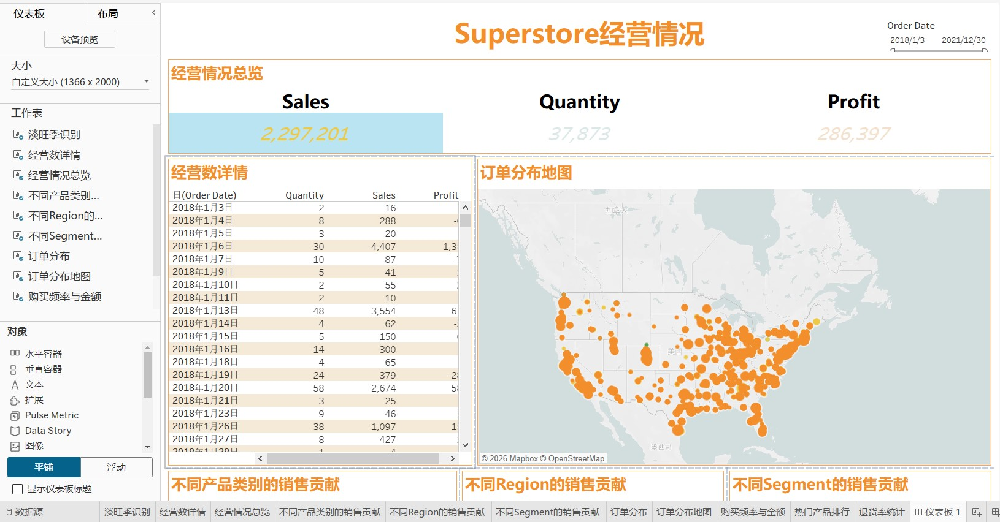

你好，我是马睿哲
欢迎来到我的个人空间
我是一名正在努力成为产品经理的研究生
我的身份
在校研究生
北京交通大学信息管理硕士在读
AI产品经理
专注于AI产品与数据产品方向
数据分析师

具备扎实的数据分析与可视化能力
实习经历
从洞察真实需求出发，以创造性工作为径，将价值深植于业务与用户之中。
百度在线网络技术（北京）有限公司
2025.12 - 2026.03产品实习生
- • 参与设计D端医生排序诊断工具，提升医生对排序机制的理解
- • 负责指标拆解、SQL取数与异常波动归因分析
- • 搭建抢单活动60s接诊率监控体系
个人技能
产品能力
- • 需求分析与竞品调研
- • PRD/MRD撰写
- • Axure原型设计
- • 用户反馈收集分析
数据分析
- • SQL数据提取
- • Python数据分析
- • Tableau/PowerBI可视化
- • A/B实验设计分析
AI能力
- • Prompt Engineering
- • Agent Workflow
- • 主流AI工具应用
- • Vibe-coding经验
作品集
这里展示了我在AI产品、数据分析、产品设计与可视化等方向的项目作品。点击任意项目卡片，查看完整项目案例。
🤖
AI Agent
AI Product Copilot
面向产品经理的AI Copilot，支持需求分析、竞品调研、PRD生成、需求拆解等。
AI Agent
Vibecoding
LangGraph
LLM
百度医生排序诊断工具
设计医生排序诊断工具，提升医生对排序机制的理解与自优化意愿。
Product
Product Design
A/B Test
电商用户行为分析 (RFM)
基于电商数据完成RFM建模、用户分层与价值挖掘，输出精细化运营策略。
Data Analysis
Python
SQL
Jupyter

解忧杂货店的销售数据看板
解忧杂货店销售数据看板，支持多维度分析与业绩追踪。
Dashboard
PowerBI
KPI

Superstore经营情况仪表盘
基于Tableau构建的超市经营数据分析仪表盘，涵盖销售、利润、区域等多维度分析。
Dashboard
Tableau
Data Viz
📊
Dashboard
运营分析看板
搭建运营核心指标体系与可视化看板，帮助团队监控业务增长。
Dashboard
SQL
Data Visualization
用户增长分析 (Tableau)
使用Tableau构建用户增长分析仪表盘，洞察用户增长来源与转化路径。
Dashboard
Tableau
Data Viz
1/1